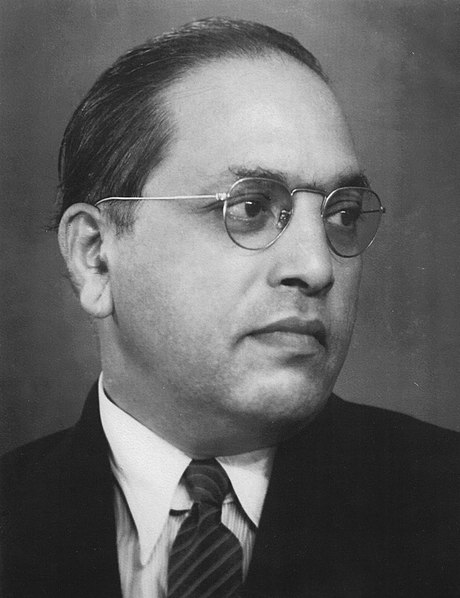
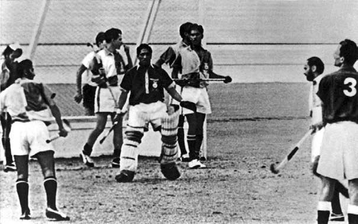

 Bhimrao Ramji Ambedkar (14 April 1891 – 6 December 1956), popularly known as Baba Saheb, was an Indian jurist, economist, politician and social reformer who inspired the Dalit Buddhist Movement and campaigned against social discrimination against Untouchables (Dalits), while also supporting the rights of women and labour.[3][4] He was Independent India's first law minister, the principal architect of the Constitution of India and a founding father of the Republic of India.
Ambedkar was a prolific student, earning doctorates in economics from both Columbia University and the London School of Economics, and gained a reputation as a scholar for his research in law, economics and political science.[10] In his early career he was an economist, professor, and lawyer. His later life was marked by his political activities; he became involved in campaigning and negotiations for India's independence, publishing journals, advocating political rights and social freedom for Dalits, and contributing significantly to the establishment of the state of India. In 1956 he converted to Buddhism, initiating mass conversions of Dalits.
In 1990, the Bharat Ratna, India's highest civilian award, was posthumously conferred upon Ambedkar. Ambedkar's legacy includes numerous memorials and depictions in popular culture.
 Padma Shri Shankar Lakshman (7 July 1933 – 29 April 2006) was an Indian hockey player. He was goalkeeper of the Indian team in the 1956, 1960 and 1964 Olympics, that won two gold medals and one silver medal. He was the first goalkeeper to become captain of an international hockey team and was awarded the Arjuna award and the Padmasri by the Indian government.[7] He was captain of the Indian team which won the gold in the 1966 Asian Games. After missing the selection for the 1968 Olympics, Lakshman quit hockey. He remained with the Army, retiring in 1979 as a captain of the Maratha Light Infantry.He died in 2006 after suffering gangrene in one leg in Mhow.
© Capt Amit Kumar